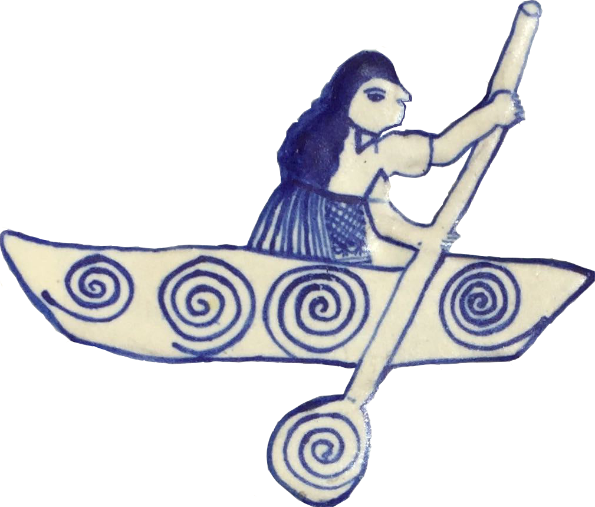
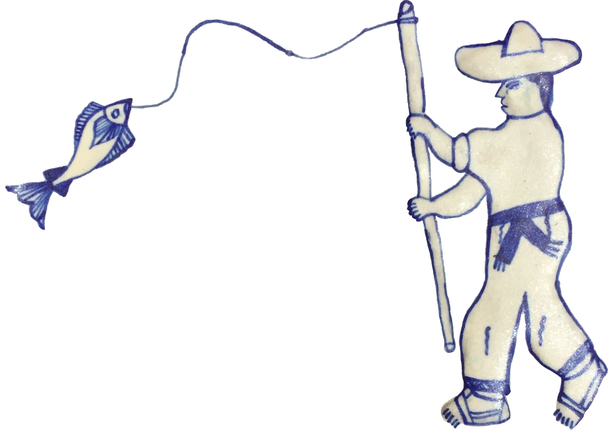

VIII Iberoamerican
Congress on Geometry
June 22nd - 26th, 2020
Morelia, México

The program consists of nine plenary talks and four special sessions:
Dra. Claudia Reynoso
Prof. Ignacio Luengo
Dra. Monica Moreno
Prof. Ana Rechtman
Prof. Juan Carlos Naranjo
Prof. Ernesto Girondo
Prof. Thomas Koberda
Each session consists of talks of 35 minutes.
